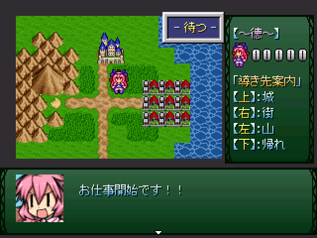

保存資料：2019-01-29の公開ページを再生しています。原HTMLと画像の載荷は保存済みです。
 |
|
| 作者：鷹 | |
| ツクール：2000 | |
| ジャンル：導きゲ | |
| 配信/投稿：可/可 | |
| 作者コメント： 【ゲームについて】 このゲームは「看板」の仕事を始めた聖人さんが人々を導くゲームです。 人々の要望を聞いて、適切な場所へと導いてあげましょう。 「操作説明」 【右上の文字が「待つ」の時】 Ｚキー:次の人を呼ぶ Ｘキー:セーブ Shiftキー:仕事をやめる（エンディングに行く） 【右上の文字が「導き」の時】 方向キー：導く方向を決める Ｚキー：決めた方向に導く Ｘキー：要望を聞きなおす 【エンディング条件】 １：「仕事をやめる」を選択する ２：100人を導く（セーブ画面のデータに導いた人数が表示されます） ――「操作説明」より |
|
| 管理人コメント： そこ そこ！ くいを はさんで ひだり がわ |
|
| ダウンロード(2.9MB) / 感想掲示板 | |
| 前の作品 / 次の作品 / TOPへ戻る | |